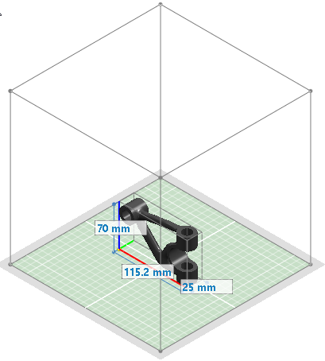
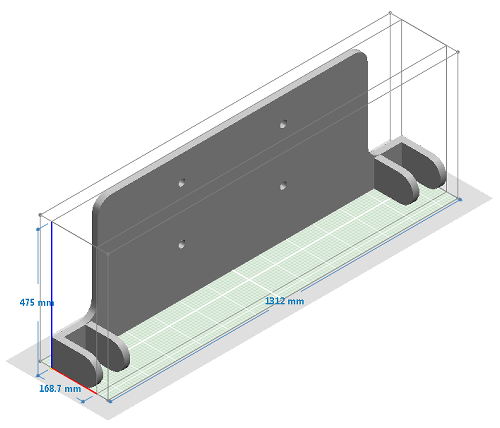
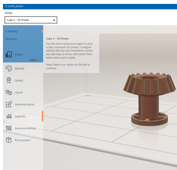

Print directly to a 3D printer
You can print your Solid Edge model directly to a 3D printer if:
-
You are connected to a 3D printer and the appropriate printer driver software is installed.
-
You are on the Windows 10 operating system.
For information about preparing a solid mesh body produced by Generative Design for 3D printing, see Print an optimized solid mesh body.

-
Open the model document that you want to send to a 3D printer.
-
On the File menu, click the 3D Print tab.
-
On the left pane, under 3D Print, click Preview
 .
.The model is displayed in the default model color. A dimensioned range box shows the extents of the model.
-
On the left pane, in the 3D Print Format section, choose the file format (STL file or 3MF file) that you want to use for 3D printing.
Tip:If you do not want to print your document now, you can click Export to save the document in STL or 3MF file format. Once saved, you can double-click the file to reopen it in Solid Edge, or you can open it in a 3D viewer.
-
To adjust the amount of tessellation (facets) on the solid model and to select other options, in the Settings section, click the Options... button, and then change the tolerance settings in the Export Options dialog box.
You also can set export units, and for 3MF files you can add textual information, such as author, organization, program, and description.
Example:To make the model coarser or smoother, change the Conversion tolerance value. To increase the accuracy of detail, change the Surface plane angle.
In the Export Options dialog box, under Tolerance Options:
-
Choose a preset combination of tolerances—Click Fine or Coarse.
-
Define your own combination of tolerances—Click Custom, and then drag the Conversion tolerance slider or the Surface plane angle slider, or type values in the boxes.
-
-
Compare the printer volume information in the Printer Size section with the model volume to determine whether the model will fit on the print bed of the 3D printer.
In the following example, the model must be scaled to fit the printer bed.

If the dimensioned range box shows that the model is larger than the platen of your 3D printer, you can do any of the following:
-
Choose a 3D printer with a print bed that is large enough to accommodate the model.
-
Change the scale factor in the model document, save the model file, and then reopen the 3D Print page and click the Preview button again.
Note:The default scale factor of the model is 1.0. Reducing the scale factor scales the model down. Increasing the scale value scales the model up. You can change the scale of a part model in Solid Edge using the Scale Body command. Another way to change the scale factor of a part or assembly model is to create a part copy using the Part Copy command.
-
-
When you are ready to print the solid model, click the 3D Print button.
The Microsoft Print Manager dialog box is displayed.

-
In the Print Manager dialog box, do all of the following:
-
From the Printer list, select a printer from the list of available (installed) 3D printers. If there is only one printer installed, then it is preselected for you.
-
Verify that the printer size of the selected 3D printer can accommodate your 3D model. To change the model scale now, click the Advanced layout button.
Also verify that there are no warnings or errors that need to be fixed. These are listed in the pane below the 3D printer list.
-
Click Print Preview to see a preview of the solid model output.
-
Click the Print button to send the file to the selected 3D printer.
-
How do I
Open a Solid Edge file in 3D BuilderScale a model for 3D printing
Save a 3D print file to disk
Create a 3D Print material
Validate a 3D print model
Check wall thickness for 3D print
Learn more
Printing solid modelsUsing the 3D Print page
Look up more details
Selecting a file format for additive manufacturingOverhang command
Overhang command bar
Print Material command
Print Validations command
Print Validations dialog box
Wall Thickness command
Wall Thickness command bar
Physical Thread command
Physical Thread command bar
Reorient command
Reorient command bar
Quick links
Working with .stl documents in Solid EdgeExport Options for STL (.stl) dialog box
Export Options for 3MF dialog box
Related Topics
Delete Voids commandDelete Voids command bar